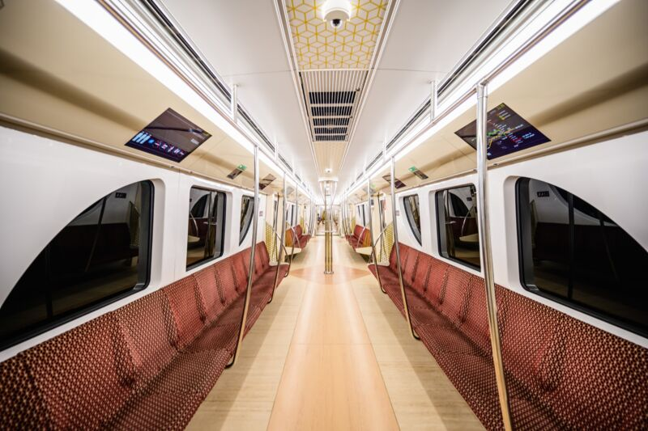
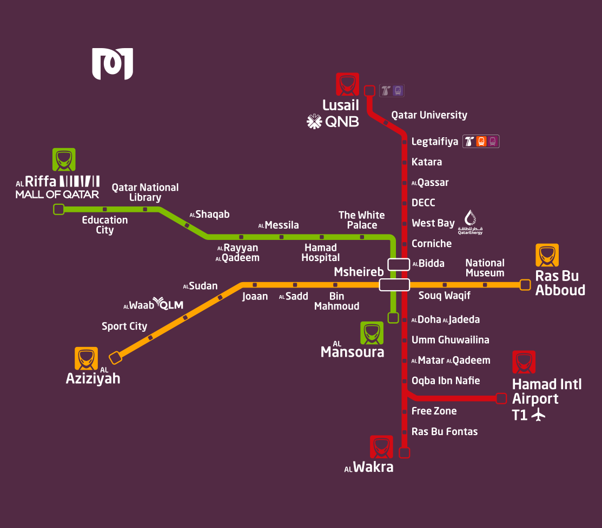

The state-of-the art Doha Metro is connecting various points of interest across Doha. When using a metro, Qatar has made it easy to navigate to your desired stadium by putting metro maps all around. The Doha Metro network has designed to meet all the needs of transporting fans during major sports events. Football fans will have a seamless travel experience with Doha Metro thanks to its direct and indirect connections to most of the 2022 World Cup stadiums, in addition to be a great alternative for getting to other key destinations inside Qatar through its 37 stations
 To know more, visit this website